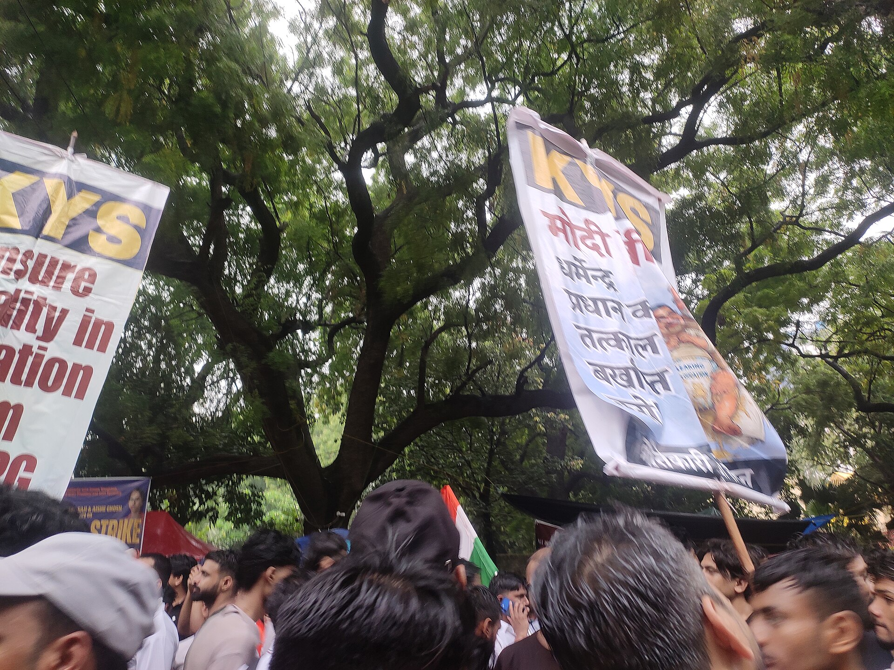

From the protest Jantar Mantar, July 2026

The problem
One voice, or many closed rooms?
The case is the CJP protest after the NEET-UG 2026 paper leak, and the 20 July march from Jantar Mantar.
- Who clusters Replies, mentions, and quotes.
- Who disagrees Tone, stance, and topic.
- What hardens Before the march, the peak, and after.
The plan
Score the words apart from the ties.
- 01Clean
- 02Draw ties
- 03Find rooms
- 04Tone, then stance
- 05Test the split
Similar posts are not enough to call a room an echo chamber. Stance labels were checked on 180 posts: 86% accurate.
The dataset
Public posts from the same weeks.
X was scraped with Zeeschuimer in three passes. Reddit came from r/cockroachjantaparty and r/IndianFocus. Bots, duplicates, and off-topic rows were removed.
19 posts a day
188 a day, 459 on the 24th
136 posts a day